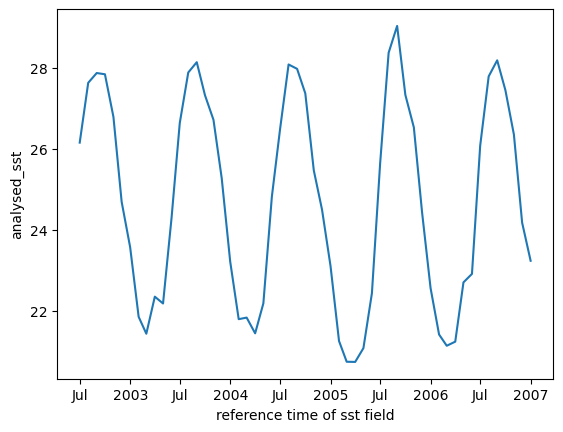

Eli Holmes with help from Roy Mendelssohn, Sunny Hospital
📘 Learning Objectives
Load ERDDAP data with xarray
Use some xarray functions on data cubes
Summary
We can open ERDDAP gridded datasets with xarray. Make sure that the url points to the dataset without any subsetting of specification. Under the hood, ERDDAP uses OPeNDAP and xarray will load the metadata (lazily). After loading, you can subset the data as needed.
Estimated Error Standard Deviation of analysed_sst
units :
degree_C
valid_max :
327.67
valid_min :
0.0
[5384580840000 values with dtype=float64]
mask
(time, latitude, longitude)
float32
...
colorBarMaximum :
20.0
colorBarMinimum :
0.0
comment :
mask can be used to further filter the data.
flag_masks :
[ 1 2 4 8 16]
flag_meanings :
open_sea land open_lake open_sea_with_ice_in_the_grid open_lake_with_ice_in_the_grid
ioos_category :
Identifier
long_name :
Sea/Land Field Composite Mask
source :
GMT "grdlandmask", ice flag from sea_ice_fraction data
standard_name :
land_binary_mask
valid_max :
31
valid_min :
1
[5384580840000 values with dtype=float32]
sea_ice_fraction
(time, latitude, longitude)
float64
...
colorBarMaximum :
1.0
colorBarMinimum :
0.0
comment :
ice fraction is a dimensionless quantity between 0 and 1; it has been interpolated by a nearest neighbor approach; EUMETSAT OSI-SAF files used: ice_conc_nh_polstere-100_multi_202503021200.nc, ice_conc_sh_polstere-100_multi_202503021200.nc.
created at nominal 4-day latency; replaced nrt (1-day latency) version.
Data is downloaded daily from https://podaac-opendap.jpl.nasa.gov/opendap/allData/ghrsst/data/GDS2/L4/GLOB/JPL/MUR/v4.1/ to NOAA NMFS SWFSC ERD by erd.data@noaa.gov .
The data for the most recent 7 days is usually revised everyday. The data for other days is sometimes revised.
2025-03-05T23:31:18Z (local files)
2025-03-05T23:31:18Z https://coastwatch.pfeg.noaa.gov/erddap/griddap/jplMURSST41.das
These data are available free of charge under the JPL PO.DAAC data policy.
The data may be used and redistributed for free but is not intended
for legal use, since it may contain inaccuracies. Neither the data
Contributor, ERD, NOAA, nor the United States Government, nor any
of their employees or contractors, makes any warranty, express or
implied, including warranties of merchantability and fitness for a
particular purpose, or assumes any legal liability for the accuracy,
completeness, or usefulness, of this information.
naming_authority :
org.ghrsst
netcdf_version_id :
4.1
Northernmost_Northing :
89.99
platform :
Terra, Aqua, GCOM-W, MetOp-B, Buoys/Ships
processing_level :
L4
product_version :
04.1nrt
project :
NASA Making Earth Science Data Records for Use in Research Environments (MEaSUREs) Program
This is a merged, multi-sensor L4 Foundation Sea Surface Temperature (SST) analysis product from Jet Propulsion Laboratory (JPL). This daily, global, Multi-scale, Ultra-high Resolution (MUR) Sea Surface Temperature (SST) 1-km data set, Version 4.1, is produced at JPL under the NASA MEaSUREs program. For details, see https://podaac.jpl.nasa.gov/dataset/MUR-JPL-L4-GLOB-v4.1 . This dataset is part of the Group for High-Resolution Sea Surface Temperature (GHRSST) project. The data for the most recent 7 days is usually revised everyday. The data for other days is sometimes revised.
%%time# Load the data into memory so the next steps are fastdc.load();
CPU times: user 1.15 s, sys: 275 ms, total: 1.43 s
Wall time: 1min 33s
Plot one day
dc.sel(time="2003-10-01").plot();
Compute the mean SST over the whole data set
Computing the mean for an data array returns a data array and here .item() is used to just return the value.
dc.mean().item()
24.8006164888092
We can plot the spatial mean raster
We do this by taking the mean over the time dimension.
dc.mean(dim=['time']).plot();
We can plot the daily means
We do this by taking the mean over the space dimensions.
dc.mean(dim=['latitude', 'longitude']).plot();
Resample to create monthly means
The resample function takes a long time if you don’t have the data loaded in memory already. So you will want to run something like dc.load() (or dc.mean() or dc.compute()) before running the resample code.
If we load in all the days for our 2 degree square, it is 18 Gb and larger than the memory on the small virtual machines (2 Gb). If we run the daily mean code, it would load all that data into memory and crash the kernel. In addition, ERDDAP has a 2Gb per request limit and we will run into that limit also. We can use dask and chunking to do the calculation in smaller chunks so we don’t run out of memory or run into download per request limits.
Use dask to chunk the data into 500 day chunks. Now when we process the data, it will load only one chunk at a time. We can (slowly) work through all the chunks without maxing out the data.
Here I will use just 3 years of data to illustrate the concept since chugging through all years would take awhile. but you can watch the memory (at the bottom nav bar in the Jupyter Hub) and see that it stays low. Note, 150 Mb chunks are a bit smaller than needed and we could speed things up by optimizing chunk size.
# This is takes about 6 minutesfrom dask.diagnostics import ProgressBarwith ProgressBar(): mean_all_years = dc_chunk.sel(time=slice("2002", "2006")).mean(dim=['latitude', 'longitude']).compute()
[########################################] | 100% Completed | 400.90 s
mean_all_years.plot();
We can resample to monthly.
mean_all_years.resample(time='ME').mean().plot();

Note when we loaded all the data in, versus chunking with dask, running the resample code was fast because the data was already loaded. But with the chunked data, we don’t keep all of it in memory so running resample would mean chugging through all the chunks again, i.e. would not be fast. Instead, above, the daily means were resampled to monthly instead of doing this:
dc_monthly = dc.resample(time='ME').mean()
Compare to Zarr
This dataset is also available on AWS in Zarr format. This is a cloud-optimized format and computations with it are considerably faster.
[########################################] | 100% Completed | 73.60 s
mean_all_years.plot();
Summary
This tutorial shows you how to create xarray data cubes for gridded data from ERDDAP. The key is to use the url in the right format <erddap server>/erddap/griddap/<collection id> with no extra information like .html or time or space subsetting, or file type.
Loading data available in Zarr format (a cloud-optimized format) works similarly and results in faster processing, but cloud-optimized data formats are still relatively uncommon.